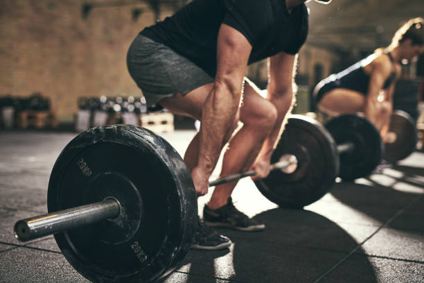

ALL-AMERICAN GYM
WORK THE MIND. FREE THE SPIRIT. STRENGTHEN THE BODY.


This is a the Bench Press.
The workout is intended to activate the pectoral and tricep muscles depending on the grip placement. The workout can also be rearranged with either incline or decline.
Note: This activity is intended to have a spotter with you while being preformed.

Hang Clean
Hang clean is a core explosion workout. It is essentially a full body workout, as the weighted bar is pulled (cleaned) from the floor, and explosively pulled upwards at shoulder height as the form ends in the squat position.
Note: This activity is intended to have a spotter with you while being preformed.

Squat
Squat is a great lower body exercise. I activates the quads, hamstrings, glutes, and calves.
Note: This activity is intended to be preformed with a spotter and inside the power rack.

Row Machine
Rowing is a full body cardio workout. It activates shoulders, abs, calves, biceps, lats, and quads. It is a great way to burn calories and strengthen your body.